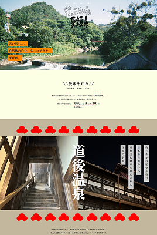
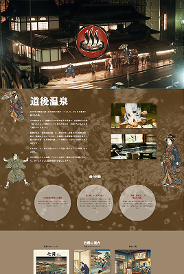
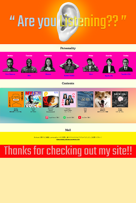

愛媛県 観光サイト
道後温泉をテーマにした、架空の観光協会サイト



概要
「松山観光協会」という架空の団体を想定し、道後温泉を中心とした観光情報サイトを制作しました。 浮世絵調のビジュアルを現代のWebデザインに落とし込むことをテーマに、配色・タイポグラフィ・ アニメーションを一貫した世界観でまとめています。
TOPページのほか、道後温泉の詳細を紹介するサブページ、地域のポッドキャストを紹介するページなど、 複数の下層ページで構成しています。
工夫した点・学んだこと
-
配色設計
紅・藍・墨・黄土という日本の伝統色をCSS変数として定義し、サイト全体で一貫した配色になるよう管理しました。
-
アニメーション
Canvasを使ったキャラクターの歩行・ダンスアニメーションを実装。パフォーマンスとのバランスを考えながら調整しました。
-
レスポンシブ対応
複数のブレークポイントを跨ぐ中で、メディアクエリの記述順序やセレクタの詳細度による衝突を経験し、CSSの適用優先順位への理解を深めました。